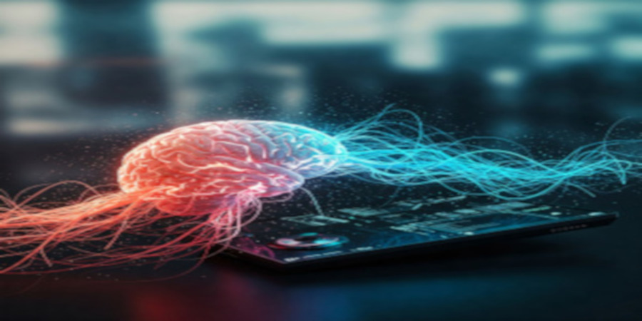
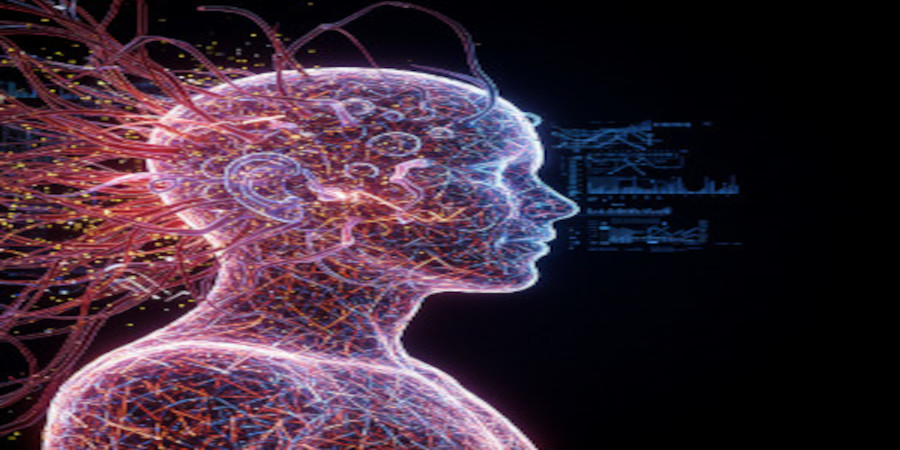

Explorando a Interface Neural
Imagine um diálogo que transcende as palavras, onde a intenção pura se manifesta no mundo digital. A Interface Neural (IN), essa fascinante fronteira da tecnologia, acena com a promessa de um elo direto entre o intrincado universo da nossa mente e o vasto potencial das máquinas. Longe de ser uma mera fantasia futurista, a IN está gradualmente emergindo como uma realidade capaz de redefinir a comunicação, a saúde e até mesmo a nossa própria compreensão do que significa ser humano em um mundo cada vez mais interconectado.
Além das Barreiras Físicas
Para indivíduos que enfrentam as limitações impostas por paralisias ou distúrbios neurológicos, a IN representa mais do que um avanço tecnológico; ela personifica a esperança de reconquistar a autonomia perdida. Visualizar um cursor movendo-se na tela, expressar pensamentos em texto ou controlar um membro protético com a força da intenção – essas possibilidades, antes relegadas ao reino da ficção científica, começam a se materializar. A IN se apresenta como um canal de comunicação renovado, um caminho para interagir com o mundo de uma maneira que antes era inatingível, restaurando a conexão vital com o ambiente e com aqueles que nos cercam.

Expandindo os Horizontes da Experiência Humana
O impacto da Interface Neural transcende a mera superação de deficiências. Ela vislumbra um futuro onde o aprendizado se torna mais intuitivo e a colaboração entre humanos e máquinas atinge níveis inéditos de integração. Imagine a capacidade de assimilar novos conhecimentos com uma fluidez surpreendente ou de trabalhar em conjunto com sistemas inteligentes de uma forma tão simbiótica que a distinção entre o pensador e a ferramenta se esmaece. A IN acena com a possibilidade de expandir as fronteiras do nosso potencial cognitivo e criativo, abrindo novas avenidas para a exploração do conhecimento e a resolução de desafios complexos.
Um Futuro de Conexão e Potencial
A Interface Neural representa mais do que um salto quântico na tecnologia; ela simboliza a nossa incessante busca por compreender a complexidade da mente humana e por transcender as limitações do corpo físico. À medida que avançamos nessa fronteira inexplorada, é fundamental que a abordemos com uma perspectiva humanizada, priorizando o bem-estar, a ética e a equidade. O futuro da conexão entre mentes e máquinas está se desdobrando diante de nós, e a IN nos convida a participar dessa evolução com curiosidade, cautela e, acima de tudo, com um profundo respeito pela essência da nossa humanidade. Que possamos dançar nessa nova era tecnológica com sabedoria, utilizando o poder da Interface Neural não apenas para conectar mentes, mas para expandir os horizontes do nosso potencial coletivo e construir um futuro mais inclusivo e promissor para todos.

Conquitas da Interface Neural
A Interface Neural com toda certeza trará grandes beneficíos para todos. Vejamos alguns deles:
- Restauração de Funções Motoras
- Comunicação Aprimorada
- Tratamento de Distúrbios Neurológicos
- Melhora da Função Sensorial
- Reabilitação Acelerada
- Aumento das Capacidades Cognitivas
- Controle de Dispositivos Externos
- Monitoramento da Saúde Cerebral
- Pesquisa Científica Avançada
- Novas Formas de Interação Humano-Computador
Desafios no Caminho
Toda tecnologia trás consigo grandes benéficios mas trás também grandes desafios, e com a IN não seria diferente. Vejamos alguns dos desafios:
- Segurança e Privacidade dos Dados Neurais
- Complexidade e Invasividade dos Procedimentos de Implante
- Durabilidade e Biocompatibilidade dos Materiais
- Desenvolvimento de Algoritmos de Decodificação Precisos
- Calibração e Adaptação Contínuas
- Custos Elevados de Desenvolvimento e Implantação
- Considerações Éticas e Sociais
- Compreensão Limitada do Cérebro
- Escalabilidade e Acessibilidade
- Aceitação e Integração pelo Usuário